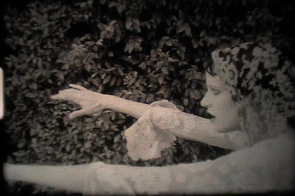
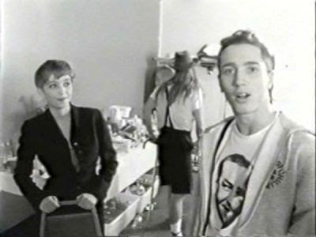
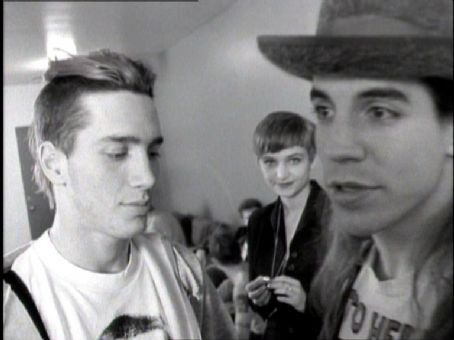
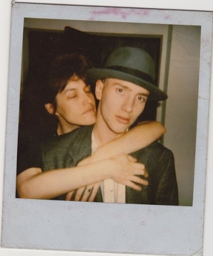
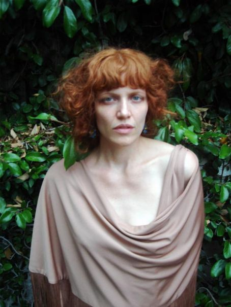

Toni Oswald to dziewczyna lubiąca skrajności. Urodzona w Houston w Teksasie stała się dobrze znana w latach 80. jako artystka uprawiająca performance w artpunkowym Theatre Carnivale z Los Angeles i druga połówka uwielbianego gitarzysty Johna Frusciante, grającego wówczas w Red Hot Chili Peppers.
Teraz mieszka w przytulnym artystowskim domu, który przycupnął u stop Gór Skalistych w Kolorado. Toni tworzy muzykę ze swoim partnerem Maxem Daviesem i poświęca czas sztuce bez sztuczności. Rozkoszuję się zimowym dniem siedząc przed kominkiem z Toni, i podczas gdy Max podsyca ogień, Toni zapala światło w pokoju.
„Moja mama umawiała się z wieloma muzykami, niektórzy byli całkiem znani. Miała fantastyczny gust muzyczny. Kiedy była ze mną w ciąży słuchała Are You Experienced? Jimiego Hendrixa”.
Jako nastolatka Toni zainteresowała się punkiem i nową falą. Exene Cervenka i Siouxie Sioux wywarły na niej duże wrażenie. Houston nie mogło jej zatrzymać, w wieku 18 lat przeniosła się do Los Angeles.
„Byłam gotowa do drogi! Myślałam o przeprowadzce do Nowego Jorku, bo uwielbiałam teatr. Ale spotkałam chłopaka, który przenosił się do LA. To zmieniło wszystko. Jeździłam tam kilka razy zanim się przeprowadziłam, widziałam pierwsze koncerty Jane`s Addiction w Lahasa Club w 1985. Widziałam Guns n` Roses w Troubadour. Działo się tam tyle w muzyce – rock, metal, punk, goth. To było najwspanialszą rzeczą wtedy w LA. Było tak wiele klubów i scen – można było się tak nasycić muzyką… Skończyłam szkołę w piątek i wyjechałam w sobotę.”
Jej celem było tworzenie teatru. Nudził ją kulturalny mainstream, ale Los Angeles dawało mnóstwo okazji do wyrażenia swojej kreatywności teksańskiej „petardzie”. Zaczęła pracę jako tancerka go-go w należącym do Johna Sidela i Matta Dike`a klubie Powertools.
„Miałyśmy tańczyć na platformach w fluorescencyjnych kostiumach i z pomalowanymi ciałami. Matt Dike był jednym z pierwszych DJ-ów miksujących hip-hop, dance i rocka. Nasze kostiumy wymyślała Jennifer Bruce, dziewczyna Anthony`ego Kiedisa. Tworzyła ciuchy dla wielbicieli George`a Clintona.”
Powertools okazał się takim sukcesem, że jego właściciele otworzyli kolejny klub, Red Square, zlokalizowany w centrum miasta, w budynku Variety Art.`s Centre. Był to stary piękny teatr, który w latach 30. i 40 . był miejscem wystawiania wodewilowych spektakli. Toni uwielbiała jego wnętrza, a kiedy zobaczyli je performerzy Steven Holman i jego żona Hillary, również się nim zachwycili. Razem stworzyli w tym samym budynku Theatre Carnivale.
„Tworzyłam ten teatr przez 3 lata. Odniósł znaczny sukces, można powiedzieć, że stał się kultowy.”
Dziki miks komedii, teatru, wodewilu i surrealizmu odbywał się tuż obok Red Square – to pozwalało Toni łączyć różne dziedziny sztuki i teatru. Była m. in. modelką u Jennifer Bruce, której chłopak i jego zespół byli regularnymi gośćmi Theatre Carnivale. Zanim RHCP osiągnęli gwiazdorski status Toni przyjaźniła się z Hillelem Slovakiem, pierwszym gitarzystą grupy. Ich więź rozpadła się gdy Hillel zaczął brać heroinę.

„Brałam kwas w szkole średniej, ale narkotyki zbytnio mnie nie interesowały. Strasznie bałam się heroiny. Przestałam widywać się z Hillelem. Nie mogłam tego wytrzymać. Myślałam, że ma zamiar umrzeć. Przestał brać i znów wrócił do mojego życia, ale potem miał załamanie i przedawkował. To mnie zniszczyło, rozpieprzyło totalnie. Miałam 20 lat. Chodziłam miesiącami jak nieprzytomna, pytając sama siebie: co się stało do cholery?

Toni przytłoczył ciężar poczucia winy i smutek. Czuła, że porzuciła przyjaciela, gdy potrzebował jej pomocy.
„Moje pokolenie dorastało oglądając tragedie lat 60., wiedząc, że heroina może cię zabić, ale gloryfikując to. Nico, Lou Reed… Wiesz, że to niebezpieczne, ale młodzieńcza buta nie dopuszcza tej myśli do głowy. Śmierć Hillela była dla mnie ważnym katalizatorem – później gdy byłam z Johnem i gdy on zaczął podążać tą samą drogą ku przepaści.”
Pięć miesięcy po śmierci Hillela Toni obchodziła 21 urodziny. Uczciła je spotkaniem ze znajomymi w modnym barze Small. Anthony Kiedis też przyszedł i przyprowadził ze sobą swojego nowego gitarzystę, Johna Frusciante. Dwa lata młodszy od Toni, wydał się jej arogancki, ale pełen uroku. Ona również zrobiła na nim wrażenie. Powiedział potem swoim przyjaciołom, że spotkał dziewczynę, której uśmiech rozjaśnia niebo.
„Wydawał się inny, co okazało się prawdą we wspaniały sposób. Nagrywali niedługo potem Blood Sugar Sex Magic i poszłam na imprezę do domu, gdzie mieszkali. Tej nocy przedstawił nas sobie Rick Rubin.”
Kilka tygodni później Toni występowała w jednym spektaklu z Manny`m Chevroletem z Too Free Stooges. Grała pielęgniarkę, która ocierała czoło Manny`ego, a potem tańczyła z nim i z Dickiem Rude. Tego dnia Manny zapytał ją podczas telefonicznej rozmowy dlaczego nie ma chłopaka.
“Z kim mógłbym Cię umówić?” – zapytał. “Kogo lubisz?”
“Chciałabym lepiej poznać Johna.”
Manny zadzwonił do Johna, który natychmiast zadzwonił do Toni. Rozmawiali przez dwie godziny, a potem, nie zważając na to, że jest chory na grypę, John zaprosił ją do siebie.”
„Pojechałam do niego. Siedział rozpalony gorączką na kanapie i słuchał trzeciego albumu Velvet Underground. Zostałam u niego przez trzy dni. Pojechaliśmy razem na Lollapallozę w ten weekend. Potem on wyjechał na tourne promocyjne. Kiedy wrócił, wprowadziłam się do niego i byliśmy razem przez 6 lat.”
Potem przeprowadzili się na Hollywood Hills i stworzyli tam sobie kreatywny kosmos dla dwojga. John miał swój muzyczny świat, Toni pisała, malowała i eksperymentowała z filmami w swoim studio. W międzyczasie RHCP stali się niezwykle sławni. Dla wyrosłych z niewielkiej punkowej sceny chłopaków międzynarodowa kariera i gwiazdorstwo okazały się niespodziewane i dekoncentrujące. John zmagał się z histerią fanów i złudnością popularności. Ta sytuacja wiele go kosztowała i zmusiła go do zadania sobie wielu poważnych pytań dotyczących sztuki i życia.
“Media były tak agresywne. Niespodziewanie wtargnęły do naszego życia mówiąc Johnowi kim jest. Po każdym koncercie ktoś chciał przeprowadzać z nim wywiad. To było fascynujące oglądać ludzi z Rolling Stone przychodzących do nas do domu. Rozmawiali z nim w salonie i mogłam ich słyszeć. Zawsze byłam załamana tym, co finalnie pojawiało się w gazetach. Zamieniali każdego z chłopaków w wymyśloną postać i sprzedawali ten wizerunek.”
Presja była zbyt duża. Ich prywatny świat stał się pełen intruzów – ludzi chcących dostać swój “kawałek” coraz bardziej zamkniętego w sobie gitarzysty Chili Peppers.

Choć zespół miał zasadę „żadnych dziewczyn w trasie”, po dwóch tygodniach bez Toni John odmówił dalszej podróży bez jej towarzystwa. Nie mogli wytrzymać bez siebie, a z Toni przy boku John miał ochronę przed machiną, której częścią stał się jego zespół. Podróżowali po Stanach, Europie, a potem Japonii.
“Rzuciłam swój teatr, żeby pojechać z nim w trasę. Straciłam swoją tożsamość. Byliśmy jak syjamskie rodzeństwo przez wiele lat, ale było to dla mnie trudne. Czułam, że coś tracę, ale chciałam go wspierać. Zupełnie przestałam grać, nie mogłam tego robić nieustannie podróżując.”
Media miały obsesję na punkcie Johna i zespołu. Wkrótce zapominanie o sobie stało się bezowocnym zmaganiem. Oboje chcieli pozostać dobrymi artystami, ale rozgłos który im towarzyszył był zbyt duży. Zaczęli szukać innych sposobów uspokojenia własnych emocji.
“Kiedy próbujesz tworzyć sztukę próbujesz uciec od siebie. Próbujesz zniknąć, żeby dostać się do źródła przenikającej cię siły, żeby tworzyć.” Palili trawę i pili czerwone wino, co wystarczało by przetrwać delirium życia w trasie, ale nie wystarczyło, by zatrzymać Johna w zespole. Zanim wyjechali do Japonii, przyjaciel z którym John chciał tworzyć w przyszłości muzykę zginął tragicznie w wypadku. To, w połączeniu z artystycznymi rozczarowaniami doświadczanymi przez Johna doprowadziło go do załamania. W końcu porzucił RHCP.
Chociaż czuł, że zrobił tak jak powinien, John wpadł w depresję i zaczął zamykać sie w sobie. Świadomie zdecydował, że zacznie brać heroinę, co sprawiło, że Toni poczuła się wewnętrznie rozdarta.

“Po śmierci Hillela muzyczna scena LA była zdruzgotana. Ludzie próbowali otrzeźwieć, pozbierać się. Ale upłynęło trochę czasu, ludzie zapomnieli o wszystkim, rzeczy się zmieniły. Kiedy spotkałam Johna działałam w teatrze i trzymałam się w kupie. Miałam dużo nadziei. Wychodziliśmy gdzieś razem, rysowaliśmy, pisaliśmy. On grał, ja śpiewałam. On miał swoją sekretną historię, o której nie mogę mówić, bo to jego sprawa – ale było to łamiące serce – narkotyki były czymś w czym odnajdował ukojenie. Narkotyki łagodziły ból. Więc zaczął je brać.”
Początkowo tylko próbował, ale minęło lato i zażywanie stało się bardziej koniecznością niż wyborem. “Płakałam cały czas. Początkowo walczyłam z tym. To było wyczerpujące. Wszyscy moi przyjaciele zażywali heroinę. John był miłością mojego życia. Nie było mowy o tym, żebym go zostawiła. I nie było też sposobu, żebym została czysta będąc z nim w związku. To było niemożliwe.”
Sprawy zaczęły się komplikować. Po tym jak pożar wywołany przez spięcie w instalacji elektrycznej zniszczył ich dom, Toni i John wprowadzili się do apartamentu w Nowym Jorku. Dzielili swój czas między to miejsce oraz Chateau Marmount w Los Angeles. John brał coraz więcej narkotyków. Przez długi czas tkwił na krawędzi życia i śmierci, tworząc nawiedzoną, transcendentalną muzykę, która wprawiała w osłupienie mainstream i wstrząsała podziemiem. Ale dla pozostających przy życiu oglądanie jego fizycznego samounicestwienia było bolesne.
W 1994 John nagrał swoją pierwszą solową płytę Niandra La Des, której okładka została wzięta z eksperymentalnego filmu Toni, zatytułowanego „Desert In The Shape”. Nagrany w początkowej fazie ich związku miał tylko czworo aktorów: Toni, Johna, Matta Polisha i córkę Flea, Clarę.
W końcu ich związek rozpadł się. Stali się dla siebie bardziej jak brat i siostra niż jak partnerzy. Choć rozstanie było decyzją obu stron, było druzgocące. Przeszedłszy przez tak wiele w tak młodym wieku Toni poczuła się totalnie zagubiona, walcząc dodatkowo z uzależnieniem, które w oczach innych nie wydawało się tak ważne jak uzależnienie Johna. Zboczyła tak bardzo z obranej przez siebie drogi, że musiała walczyć, by ponownie ją odnaleźć
“Patrząc wstecz zdaję sobie sprawę, że moja tożsamość była bardzo silna, ale czułam się pokonana. Społeczeństwo wielbi sławę i sukces. Kiedy braliśmy narkotyki wszyscy zawsze dzwonili i martwili się o Johna. Nasi wspólni przyjaciele wydawali się bardziej przejęci jego stanem. Owszem on był znacznie bardziej poza kontrolą, ale ja umierałam. Jego łoże śmierci miało jednak pierwszeństwo.”
Mimo wszystko utrzymywali ze sobą kontakt i zostali bliskimi przyjaciółmi. John przeprowadził się do domu w Silverlake, który znalazła Toni, ale nadal się o niego martwiła.
“ W tym czasie cała odpowiedzialność spoczywała na mnie. Czy on coś je? Z kim się zadaje? Co to za podejrzane typy siedzą w jego domu i biorą narkotyki? Kiedy to wszystko się skończy?
Trudno było to porzucić, ale Toni znalazła ukojenie w sztuce. Skupiła się na terapii i na tworzeniu muzyki, nagrywając jako The Diary of IC Explura, pseudonim nadany jej niegdyś przez Johna.
Projekt łączący fantazję, listy, rysunki, kolaże i prozę pochłonął dekadę życia Toni, pozwalając jej przejść ponownie transformację i stać się silniejszą oraz bardziej pewną siebie jako artystka
Wróciła do aktorstwa, występując w sztukach Adaptation, Jackpot i Deadwood, między innymi projektami teatralnymi oraz filmowymi. Pracowała też w branży modowej, prowadząc biuro domu mody Jovovich-Hawk.
Część pierwsza The Diary of Ic Explura, A Love Letter to the Transformer, została wydana w 2004 roku. Przy tym albumie pracował m. in. Josh Klinghoffer, obecnie gitarzysta RHCP. Na tej płycie Toni można znaleźć wpływy eksperymentalnego jazzu, poezji śpiewanej, muzyki Briana Eno i Davida Bowiego. Projekt został zremasterowany w 2011 roku przez Maxa Daviesa i ponownie wydany, razem z częścią drugą. Kiedy Toni spotkała Maxa w Los Angeles poczuli się doskonale zgrani i chcieli tworzyć razem muzykę. Poza tym mieli sekretne plany wobec siebie – kiedy oboje zostali singlami, szybko zakochali się w sobie. “Max jest kolejną miłością mojego życia. Nigdy nie pokochałam nikogo tak jak Johna, dopóki nie spotkałam Maxa.”
Spędzanie czasu w ich towarzystwie to lekcja artystycznej kompatybilności. Ich dom to prawdziwe sanktuarium, a ich wzajemny respekt jest dostrzegalny na każdym kroku. Wyprowadzka z Los Angeles pomogła jej uporać się z żalem i nawiązać na nowo więź z naturą. Będąc świadkiem zniszczeń jakie niesie sława, Toni jest wdzięczna za doświadczenia, które przyniosło jej życie.

“Nasze społeczeństwo jest tak dysfunkcyjne, że wielbimy te wszystkie rzeczy: pieniądze, siłę, sławę, wpływy, a nie wielbimy więzi między ludźmi. Sława jest narzędziem zemsty, manipulacji. Stanę się naprawdę dobry w tym i stanę się bardzo sławny, a wszyscy ludzie będą mnie kochali, więc ty też musisz mnie kochać. Ale to tak nie działa. Twoi rodzice nadal Cię nie zaakceptują. American Dream to kłamstwo.”
Dziś Toni ma filozoficzne podejście do swojej dzikiej młodości i dużo spokoju w sobie. The Diary of Ic Explura jest dostępne na bandcamp.com. Toni pracuje nad nowym tomem poezji i jest zaangażowana w program letniej szkoły pisania w Jack Kerouac’s School of Disembodied Poetics w Naropie. Toni and Max występują regularnie z przyjaciółmi w okolicach Boulder w Kolorado, a sylwestra spędzą z poetką Anne Waldman biorąc udział w Poetry Project w Nowym Jorku.
Będąc długoletnią fanką stylu vintage, której modowy styl ukształtowała Joan Crawford i inne gwiazdy lat 30, w 2010 roku Toni otworzyła własny internetowy butik Moonchild Vintage.
„Max i ja mamy nowy muzyczny projekt, zatytułowany PAN – Poetry Audio Network. W tym momencie mojego życia szukam sposobów, by uporać się z czymś, co jest większe ode mnie i pozostaje jak najdalej od komercji i bycia produktem. Zabijamy naszą planetę naszą potrzebą nieustannego konsumowania i zdobywania pieniędzy. Życie prostym życiem i wyłączenie się z szaleństwa społecznego życia wydaje mi się właściwe i to jest kierunek w którym zorientowany jest PAN.”
W życiu ważny jest teraz dla niej zielony sok z warzyw i wydobywanie wewnętrznego piękna. Utrzymuje przyjacielskie kontakty z Johnem, ale częściej rozmawia z jego żoną, wokalistką i perkusistką Swahili Blonde, Nicole Turley. Dziś Toni nie żałuje niczego.
„Jesteśmy tu żeby doświadczyć świadomości i pracować z nią. Nie ma złych wyborów, Jest tylko droga która podążasz. Uważam, że wszystko jest procesem wzrastania i rozwijania się jako świadomy byt. Sztuka i kreatywność służą do poszukiwania wolności w życiu.”
www.tonioswald.bandcamp.com
www.tonioswald.blogspot.com
http://www.etsy.com/people/moonchildvintage
Autor: Sofia Mella
Tłumaczenie: Wanda Modzelewska
Edycja tekstu: Marcin Rudnik
Źródło:
http://sofiamella.blogspot.com/2013/09/toni-real-girl.html